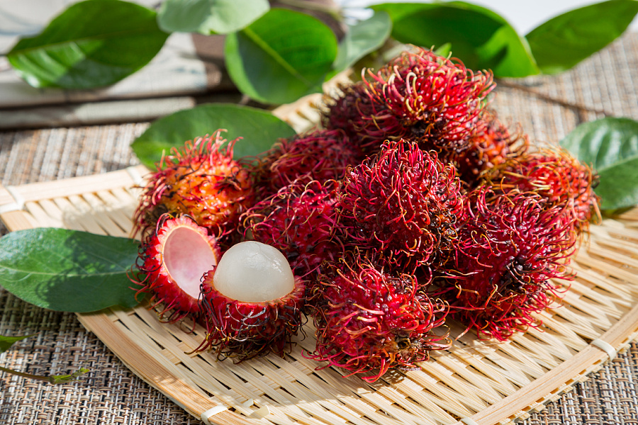

葡萄（学名：Vitis viniferaL.），葡萄科藤本植物，原产亚洲西部，世界各地均有栽培，约95%集中分布在北半球，可用作生食、制葡萄干或酿酒，酿酒后的酒脚可提酒食酸。根和藤药用能止呕、安胎，果实可以用来防止血栓形成。葡萄是世界最古老的果树树种之一。 葡萄树一般为小枝圆柱形，有纵棱纹，无毛或被稀疏柔毛，叶卵圆形，圆锥花序密集或疏散，基部分枝发达，果实球形或椭圆形，花期4-5月，果期8-9月。


葡萄（学名：Vitis viniferaL.），葡萄科藤本植物，原产亚洲西部，世界各地均有栽培，约95%集中分布在北半球，可用作生食、制葡萄干或酿酒，酿酒后的酒脚可提酒食酸。根和藤药用能止呕、安胎，果实可以用来防止血栓形成。葡萄是世界最古老的果树树种之一。 葡萄树一般为小枝圆柱形，有纵棱纹，无毛或被稀疏柔毛，叶卵圆形，圆锥花序密集或疏散，基部分枝发达，果实球形或椭圆形，花期4-5月，果期8-9月。
水果之家